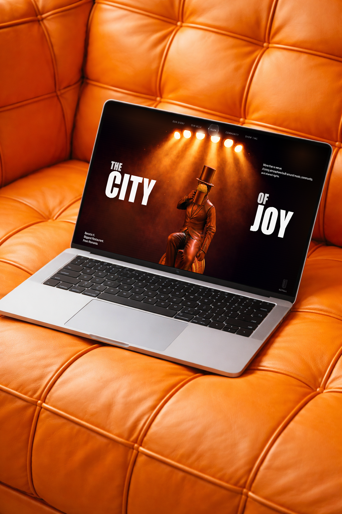

Beraria H
Every book holds a story.
Here are a few from my shelf.
Click to enable sound
SCROLL TO EXPLORE
Design is not about reaching a final point, but about constant improvement. Each project becomes a new chapter, refining how I think, my process, and the way I build digital experiences.
I'm drawn to design that carries meaning. Through each project, I try to tell a story, express emotion, and build experiences where every decision has a reason.
CLIENT REVIEW
Denisa was super easy to work with and always delivered really solid design work. She paid attention to details and was always open to feedback.
CLIENT REVIEW
Denisa handled both design and research really well and was always on top of her tasks. Fast, reliable, and great to have in the team.
CLIENT REVIEW
Super easy to work with, very professional, and always delivers exactly what's needed (sometimes even better than agencies we've worked with before).
A few reflections from the people I worked with along the way.